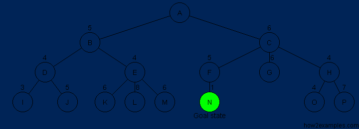

A* Search unlike, BFS and DFS, is an informed search algorithm. This means that A* only performs a step if it seems promising and reasonable, according to its functions, unlike other graph-traversal algorithms. It runs towards the goal and doesn't consider any non-optimal steps if it doesn't have to consider them.
A* is based on using heuristic methods to achieve optimality and completeness, and is a variant of the best-first algorithm. Each time A* enters a state, it calculates the cost, f(n) (n being the neighboring node), to travel to all of the neighboring nodes, and then enters the node with the lowest value of f(n). These values are calculated with the following formula:
g(n) being the value of the shortest path from the start node to node n,
and h(n) being a heuristic approximation of the node's value.

The efficiency of A* is highly dependent on the heuristic value h(n),
and depending on the type of problem,
we may need to use a different heuristic function for it to find the optimal solution.
let the openList equal empty list of nodes
let the closedList equal empty list of nodes
put the startNode on the openList (leave it's f at zero)
while the openList is not empty
let the currentNode equal the node with the least f value
remove the currentNode from the openList
add the currentNode to the closedList
if currentNode is the goal
found the end! Backtrack to get path
let the children of the currentNode equal the adjacent nodes
for each child in the children
if child is in the closedList
continue to beginning of for loop
child.g = currentNode.g + distance between child and current
child.h = distance from child to end
child.f = child.g + child.h
if child.position is in the openList's nodes positions
if the child.g is higher than the openList node's g
continue to beginning of for loop
add the child to the openList